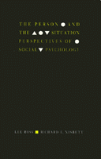

A groundbreaking synthesis of the central themes of social psychology and personality theory
A groundbreaking synthesis of the central themes of social psychology and personality theory


 A groundbreaking synthesis of the central themes of social psychology and personality theory
A groundbreaking synthesis of the central themes of social psychology and personality theory

|  |
The Person and the SituationEssential Contributions of Social PsychologyLee Ross and Richard E. Nisbettcloth EAN: 978-0-87722-851-6 (ISBN: 0-87722-851-5) |
Association of American University Presses Book Jacket Award, 1992
In this groundbreaking synthesis of the central themes of social psychology and personality theory, Lee Ross and Richard E. Nisbett attempt to reconcile common sense and common experience with the empirical lessons and challenges that lie at the core of social psychology. The Person and the Situation seeks to provide an overview of social psychology�s primary scientific and intellectual contributions, one that serves to challenge, reform, and expand common sense.
Ross and Nisbett identify three contributions of social psychology that have significantly influenced the study of the individual and society: the power and subtlety of situational influences on behavior; the need to recognize the subjective nature of situational influence; and the utility of regarding both individual psyches and social groups as "tension systems." The authors show how these themes inform the study of any topic having to do with social behavior. Their highly original and penetrating analysis of how we can better understand the interaction of people and their life situations leads to new insights on how to design effective interventions that can work to enhance individual and societal functioning.
Foreword
Preface
1. Introduction
The Lessons and Challenges of Social Psychology •
The Tripod on Which Social Psychology Rests •
Predictability and Indeterminacy •
The Problem of Effect Size •
Overview and Plan of the Book
2. The Power of the Situation
Social Influence and Group Processes •
Channel Factors
3. Construing the Social World
Subjectivist Considerations in Objective Behaviorism •
The Construal Question in Social Psychology •
The Attribution Process •
Failure to Allow for the Uncertainties of Construal
4. The Search for Personal consistency
An Overview of Conventional theories of Personality •
The Scientific Findings and the Debate •
Professional Responses to the Challenge of 1968 •
Making Sense of "Consistency" Correlations
5. Lay Personology and Lay Social Psychology
Qualitative Aspects of Lay Personality Theoy •
Quantitative Aspects of Lay Personality Theoy •
Lay Dispositionism and the Fundamental Attribution Error •
The Sources of Lay Dispositionism
6. The Coherence of Everyday Social Experience
Scientific Disentangling versus Real-World Confounding •
When People Create Their Own Environments •
Continuity of Behavior over the Lifespan •
Situations, Construals, and Personality
7. The Social Psychology of Culture
Situational Determinants of Culture •
Culture, Ideology, and Construal •
Cultures as Tension Systems •
Traits, Ethnicities, and the Coordinates of Individual Differences
8. Applying Social Psychology
Methodological Lessons for Research Practitioners and Consumers •
When "Big"Interventions Fail •
When "Small" Interventions Succeed •
Labeling and Attribution Effects in the Classroom •
Subjective Perceptions and Objective Health Consequences •
Everyday Application of Social Psychology
References
Index of Authors and Names
Subject Index
 | Lee Ross is Professor of Psychology at Stanford University and a founder and one of the principal investigators of the Stanford Center on Conflict and Negotiation. |
 | Richard E. Nisbett is Theodore M. Newcomb Professor of Psychology and Director of the Research Center for Group Dynamics at the University of Michigan. |
© 2015 Temple University. All Rights Reserved. This page: http://www.temple.edu/tempress/titles/882_reg.html.